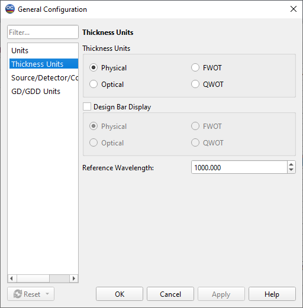

Thickness Units
This Configuration Option allows you to choose between measuring layer thicknesses in physical or optical terms:
Physical Thickness is measured in metric units set in the Units page of the General Configuration window.
Optical Thickness is defined as a product of the physical thickness and the corresponding refractive index at a reference wavelength (see below). It is measured in the same units.
FWOT (Full Wave Optical Thickness) sets a layer optical thickness measurement in values relative to the reference wavelength.
QWOT (Quarter Wave Optical Thickness) sets a layer optical thickness measurement in values relative to a quarter of the reference wavelength. If you select Optical Thickness, FWOT or QWOT, you should also specify the Reference Wavelength (in metric units).
